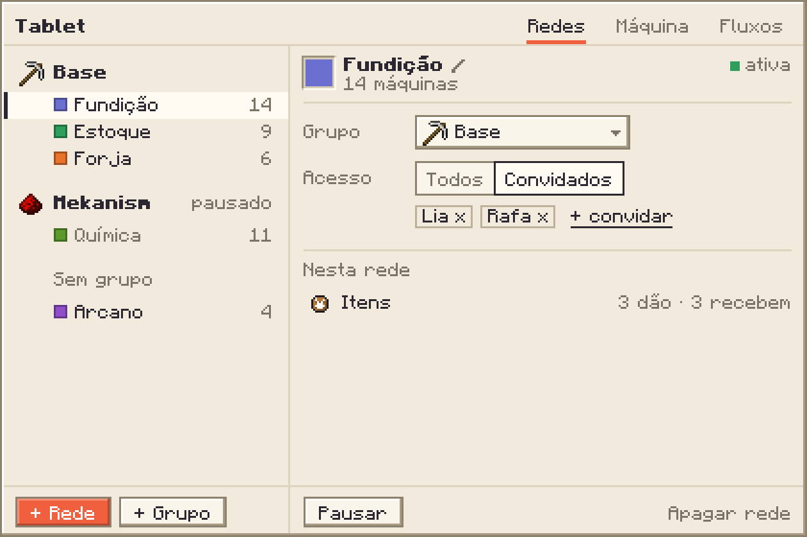

Custo
- Fechado, nada. Aberto, só a aba à vista recebe dados, e só quando mudam.
- Máquina: o veredito é montado só para a escolhida, uma vez por segundo, com o que o motor já guarda (sono e motivo, cheio, sem rede, descarregada, filtro).
- Fluxos: um tipo por vez, até 32 linhas por coluna, a média de 5 s que já existe por porta.
- Ícone de grupo: um item salvo no grupo (o id), lido só ao desenhar a lista.
Sai do Tablet
- Mapa, árvore de roteadores e visão por blocos.
- Selecionar, colar nos marcados, mover em massa e o perfil no Tablet (copiar e colar por máquina já existe na tela do roteador).
- Filtros rápidos, etiquetas na busca, contadores do topo, Fluxos por rede e a barra de tempo do tick.
Para decidir
- Abre na última aba usada; clicar numa máquina com o Tablet abre em Máquina.
- O seletor de cor é o da Tela de Sinal sem alfa, sem conta-gotas e sem as cores do tema.
- Fluxos com um filtro de rede, ou sem nenhum?